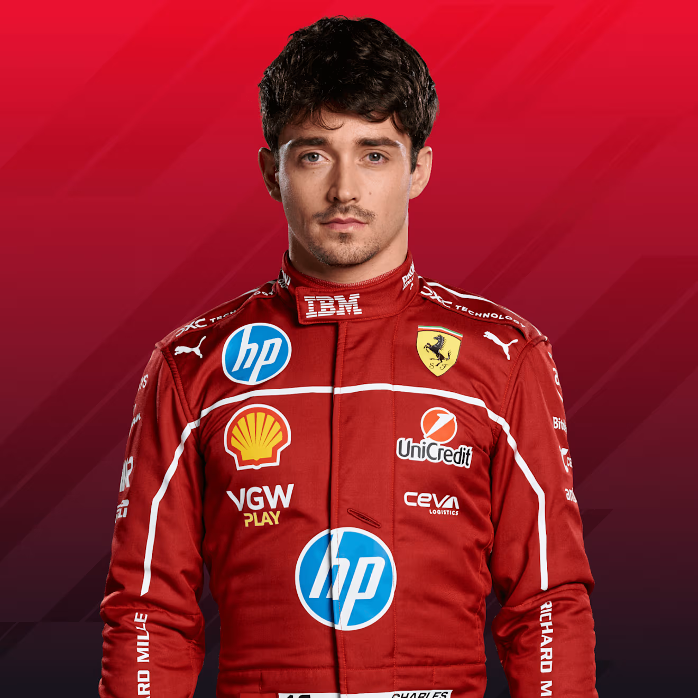

Mundial de Pilotos
| Posição | # | Piloto | Nacionalidade | Equipe | Pontuação |
|---|---|---|---|---|---|
| 1 | 4 | Lando Norris | Reino Unido | McLaren | 62 |
| 2 | 1 | Max Verstappen | Países Baixos | Red Bull | 61 |
| 3 | 81 | Oscar Piastri | Austrália | McLaren | 49 |
| 4 | 63 | George Russell | Reino Unido | Mercedes | 45 |
| 5 | 12 | Andrea Kimi Antonelli | Itália | Mercedes | 30 |
| 6 | 16 | Charles Leclerc | Mônaco | Ferrari | 20 |
| 7 | 23 | Alexander Albon | Tailândia | Williams | 18 |
| 8 | 44 | Lewis Hamilton | Reino Unido | Ferrari | 15 |
| 9 | 31 | Esteban Ocon | França | Haas | 10 |
| 10 | 18 | Lance Stroll | Canadá | Aston Martin | 10 |
| 11 | 27 | Nico Hülkenberg | Alemanha | Sauber | 6 |
| 12 | 87 | Oliver Bearman | Reino Unido | Haas | 5 |
| 13 | 6 | Isack Hadjar | França | VCARB | 4 |
| 14 | 22 | Yuki Tsunoda | Japão | RedBull | 3 |
| 15 | 55 | Carlos Sainz | Espanha | Williams | 1 |
| 16 | 10 | Pierre Gasly | França | Alpine | 0 |
| 17 | 14 | Fernando Alonso | Espanha | Aston Martin | 0 |
| 18 | 30 | Liam Lawson | Nova Zelândia | VCARB | 0 |
| 19 | 7 | Jack Doohan | Austrália | Alpine | 0 |
| 20 | 5 | Gabriel Bortoleto | Brasil | Sauber | 0 |
Mundial de Construtores
| Posição | Equipe | Pontuação |
|---|---|---|
| 1 | McLaren | 111 |
| 2 | Mercedes | 75 |
| 3 | Red Bull Racing | 61 |
| 4 | Ferrari | 35 |
| 5 | Williams | 19 |
| 6 | Haas | 15 |
| 7 | Aston Martin | 10 |
| 8 | Racing Bulls | 7 |
| 9 | Sauber | 6 |
| 10 | Alpine | 0 |
GP da Austrália
| Posição | # | Piloto | Nacionalidade | Tempo | Pontuação |
|---|---|---|---|---|---|
| 1 | 4 | Lando Norris | Reino Unido | 1:42:06.304 | 25 |
| 2 | 1 | Max Verstappen | Países Baixos | +0.895s | 18 |
| 3 | 63 | George Russell | Reino Unido | +8.481s | 15 |
| 4 | 12 | Andrea Kimi Antonelli | Itália | +15.392s | 12 |
| 5 | 23 | Alexander Albon | Tailândia | +22.105s | 10 |
| 6 | 18 | Lance Stroll | Canadá | +28.764s | 8 |
| 7 | 27 | Nico Hülkenberg | Alemanha | +35.421s | 6 |
| 8 | 16 | Charles Leclerc | Mônaco | +42.089s | 4 |
| 9 | 81 | Oscar Piastri | Austrália | +48.756s | 2 |
| 10 | 44 | Lewis Hamilton | Reino Unido | +55.423s | 1 |
| 11 | 31 | Esteban Ocon | França | +1:02.090s | 0 |
| 12 | 22 | Yuki Tsunoda | Japão | +1:08.757s | 0 |
| 13 | 10 | Pierre Gasly | França | +1:15.424s | 0 |
| 14 | 55 | Carlos Sainz | Espanha | +1:22.091s | 0 |
| 15 | 5 | Gabriel Bortoleto | Brasil | DNF | 0 |
| 16 | 14 | Fernando Alonso | Espanha | DNF | 0 |
| 17 | 6 | Isack Hadjar | França | DNF | 0 |
| 18 | 30 | Liam Lawson | Nova Zelândia | DNF | 0 |
| 19 | 7 | Jack Doohan | Austrália | DNF | 0 |
| 20 | 87 | Oliver Bearman | Reino Unido | DNF | 0 |
GP da China
| Posição | # | Piloto | Nacionalidade | Tempo | Pontuação |
|---|---|---|---|---|---|
| 1 | 81 | Oscar Piastri | Austrália | 1:30:55.026 | 25 |
| 2 | 4 | Lando Norris | Reino Unido | +9.748s | 18 |
| 3 | 63 | George Russell | Reino Unido | +11.097s | 15 |
| 4 | 1 | Max Verstappen | Países Baixos | +16.656s | 12 |
| 5 | 18 | Lance Stroll | Canadá | +22.215s | 10 |
| 6 | 23 | Alexander Albon | Tailândia | +28.774s | 8 |
| 7 | 27 | Nico Hülkenberg | Alemanha | +35.333s | 6 |
| 8 | 22 | Yuki Tsunoda | Japão | +41.892s | 4 |
| 9 | 16 | Charles Leclerc | Mônaco | +48.451s | 2 |
| 10 | 44 | Lewis Hamilton | Reino Unido | +55.010s | 1 |
| 11 | 31 | Esteban Ocon | França | +1:01.569s | 0 |
| 12 | 10 | Pierre Gasly | França | +1:08.128s | 0 |
| 13 | 55 | Carlos Sainz | Espanha | +1:14.687s | 0 |
| 14 | 5 | Gabriel Bortoleto | Brasil | +1:21.246s | 0 |
| 15 | 14 | Fernando Alonso | Espanha | +1:27.805s | 0 |
| 16 | 6 | Isack Hadjar | França | +1:34.364s | 0 |
| 17 | 30 | Liam Lawson | Nova Zelândia | +1:40.923s | 0 |
| 18 | 7 | Jack Doohan | Austrália | +1:47.482s | 0 |
| 19 | 87 | Oliver Bearman | Reino Unido | +1:54.041s | 0 |
| 20 | 12 | Andrea Kimi Antonelli | Itália | +2:00.600s | 0 |
GP do Japão
| Posição | # | Piloto | Nacionalidade | Tempo | Pontuação |
|---|---|---|---|---|---|
| 1 | 1 | Max Verstappen | Países Baixos | 1:22:06.983 | 25 |
| 2 | 4 | Lando Norris | Reino Unido | +1.423s | 18 |
| 3 | 81 | Oscar Piastri | Austrália | +2.129s | 15 |
| 4 | 16 | Charles Leclerc | Mônaco | +16.097s | 12 |
| 5 | 63 | George Russell | Reino Unido | +17.362s | 10 |
| 6 | 9 | Andrea Kimi Antonelli | Itália | +18.671s | 8 |
| 7 | 44 | Lewis Hamilton | Reino Unido | +29.182s | 6 |
| 8 | 6 | Isack Hadjar | França | +37.134s | 4 |
| 9 | 23 | Alexander Albon | Tailândia | +40.367s | 2 |
| 10 | 87 | Oliver Bearman | Reino Unido | +54.529s | 1 |
| 11 | 14 | Fernando Alonso | Espanha | +57.333s | 0 |
| 12 | 22 | Yuki Tsunoda | Japão | +58.401s | 0 |
| 13 | 10 | Pierre Gasly | França | +1:02.122s | 0 |
| 14 | 55 | Carlos Sainz | Espanha | +1:14.129s | 0 |
| 15 | 7 | Jack Doohan | Austrália | +1:21.314s | 0 |
| 16 | 27 | Nico Hülkenberg | Alemanha | +1:21.957s | 0 |
| 17 | 30 | Liam Lawson | Nova Zelândia | +1:22.734s | 0 |
| 18 | 24 | Guanyu Zhou | China | +1:23.511s | 0 |
| 19 | 5 | Gabriel Bortoleto | Brasil | +1:24.288s | 0 |
| 21 | 12 | Andrea Kimi Antonelli | Itália | +1:25.842s | 0 |
Pilotos
| Foto | Piloto | Nacionalidade | # | Equipe |
|---|---|---|---|---|
 |
Max Verstappen | Países Baixos | 1 | Red Bull Racing |
 |
Yuki Tsunoda | Japão | 22 | Red Bull Racing |
| Lewis Hamilton | Reino Unido | 44 | Ferrari | |
|  | Charles Leclerc | Mônaco | 16 | Ferrari |
| Lando Norris | Reino Unido | 4 | McLaren | |
| Oscar Piastri | Austrália | 81 | McLaren | |
| George Russell | Reino Unido | 63 | Mercedes | |
 |
Andrea Kimi Antonelli | Itália | 12 | Mercedes |
 |
Fernando Alonso | Espanha | 14 | Aston Martin |
 |
Lance Stroll | Canadá | 18 | Aston Martin |
 |
Pierre Gasly | França | 10 | Alpine |
 |
Jack Doohan | Austrália | 7 | Alpine |
 |
Esteban Ocon | França | 31 | Haas |
| Oliver Bearman | Reino Unido | 87 | Haas | |
| Liam Lawson | Nova Zelândia | 30 | Racing Bulls | |
 |
Isack Hadjar | França | 6 | Racing Bulls |
 |
Alexander Albon | Tailândia | 23 | Williams |
Equipes
| Logo | Equipe | Nacionalidade |
|---|---|---|
 |
Red Bull Racing | Áustria |
 |
Ferrari | Itália |
| Mercedes-AMG Petronas Formula One Team | Alemanha | |
| McLaren | Reino Unido | |
 |
Alpine | França |
| Aston Martin | Reino Unido | |
| Williams | Reino Unido | |
| Haas | Estados Unidos | |
| Kick Sauber | Suíça | |
 |
Racing Bulls | Itália |
Sistema de Pontuação da Fórmula 1
Como funciona a pontuação dos pilotos
Os pontos são atribuídos aos 10 primeiros colocados de cada corrida conforme a tabela abaixo:
| Posição | Pontos |
|---|---|
| 1º | 25 |
| 2º | 18 |
| 3º | 15 |
| 4º | 12 |
| 5º | 10 |
| 6º | 8 |
| 7º | 6 |
| 8º | 4 |
| 9º | 2 |
| 10º | 1 |
Como funciona a pontuação das equipes (Construtores)
Cada equipe soma os pontos obtidos pelos dois pilotos em cada corrida. Exemplo:
| Equipe | Piloto 1 (posição) | Piloto 2 (posição) | Pontos da equipe |
|---|---|---|---|
| Red Bull | 1º (25 pts) | 3º (15 pts) | 40 |
| Mercedes | 4º (12 pts) | 5º (10 pts) | 22 |
| Ferrari | 2º (18 pts) | 6º (8 pts) | 26 |